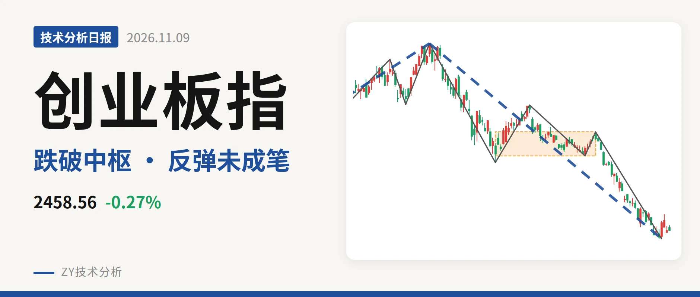
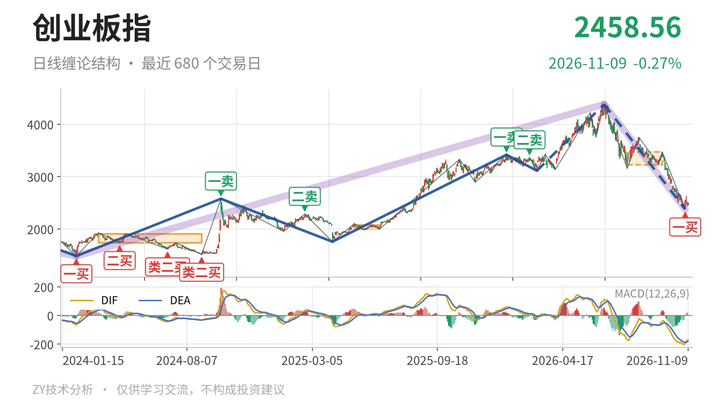
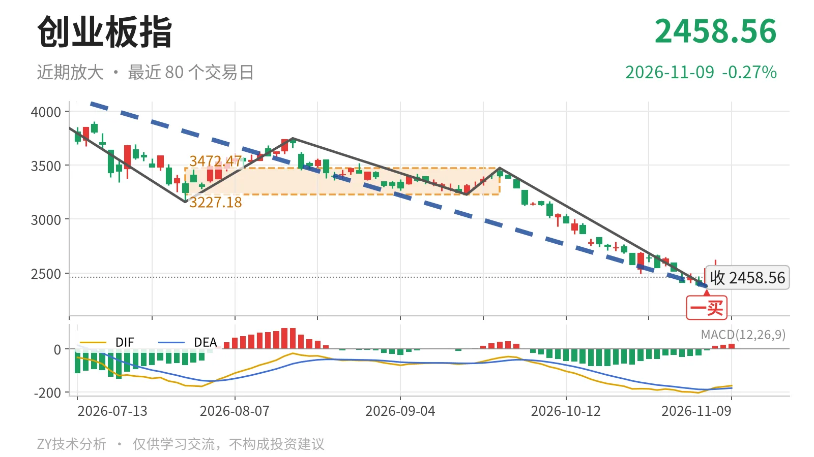

创业板指｜一买后反抽未成笔，压力看3227点附近

最近日线中枢 3227.18—3472.47点，收盘位于中枢之下
一句话：11月4日一买反抽未成笔，下跌段未结束，3227点关键压力。
🔍 走势结构：6月25日以来下跌段仍在延续
当前处于6月25日从4380.41点开始的下跌段中，这段日线线段已跌约45.8%，至今没有结束。更大级别看，2024年2月5日至2026年6月25日从1482.99点至4380.41点的上涨段尚未被扭转，因此这段下跌先按大级别上涨中的回落处理。6月25日至11月4日已走出5笔，最后一笔在11月4日结束，之后11月5日至11月9日三根K线未成笔，下跌段结构还没有被反向线段破坏。

📍 中枢与位置：价格在最近中枢下方23.8%
最近一个日线笔中枢是7月30日至9月22日形成的3227.18—3472.47点，最新收盘2458.56点低于下沿约23.8%。该中枢相较2025年5月14日至2025年6月23日的1996.96—2076.91点已明显上移，但当前价格跌至其下方，属于中枢上移后的深幅回撤。下方的大线段中枢为2122.32—2282.65点，最新价仍在其上沿2282.65点上方，还没跌回大中枢内部。
🧭 买卖点：11月4日一买后反弹未成笔
日线笔级别中，11月4日的2376.28点是一买，所在9月22日至11月4日下跌笔已经结束。之后三根K线最高2625.99点、最低2438.72点，未跌破一买低点，但也还未构成新的上涨笔。1月13日一卖3416.84点、2月25日二卖3363.18点，一个比一个低，之后价格继续下行。线段级别的3月9日三买3111.88点已被跌破，该三买只作用于3月9日至6月25日的上涨线段。

⚡ 背驰：面积收缩但DIF没有收敛
11月4日一买对应的9月22日至11月4日下跌笔，同6月25日至7月30日下跌笔比较：价格从3158.14点继续新低到2376.28点，绿柱面积由1837缩到1107，但DIF低点由-171.1继续下探到-204.5。价格新低而面积缩小，DIF未同步抬升，这不是标准的新低不新弱，一买属性更偏面积背驰。因此一买后的反弹力度要看价格能否维持在2376点上方，并进一步反抽3227点中枢下沿。
🗺️ 关键位置观察：反抽不回3227点看三卖
上方关键位在日线笔中枢下沿3227点附近。若后续反抽不能回到3227点上方，结构上构成三卖，6月25日以来的下跌段继续偏弱；若重新站上3227点，下跌更可能只是中枢扩展。下方大线段中枢上沿2283点附近若跌破，价格重新进入2122—2283点大中枢内部，结构转为更大级别震荡。当前一买后的反弹最高仅2626点，距3227点仍有明显距离，弱在价格离中枢下沿过远、DIF仍处零轴下。结构判断：偏弱。
⚠️ 本文为基于公开行情数据的缠论技术结构记录，由程序自动计算并生成，仅供学习交流，不构成任何投资建议。市场有风险，投资需谨慎。